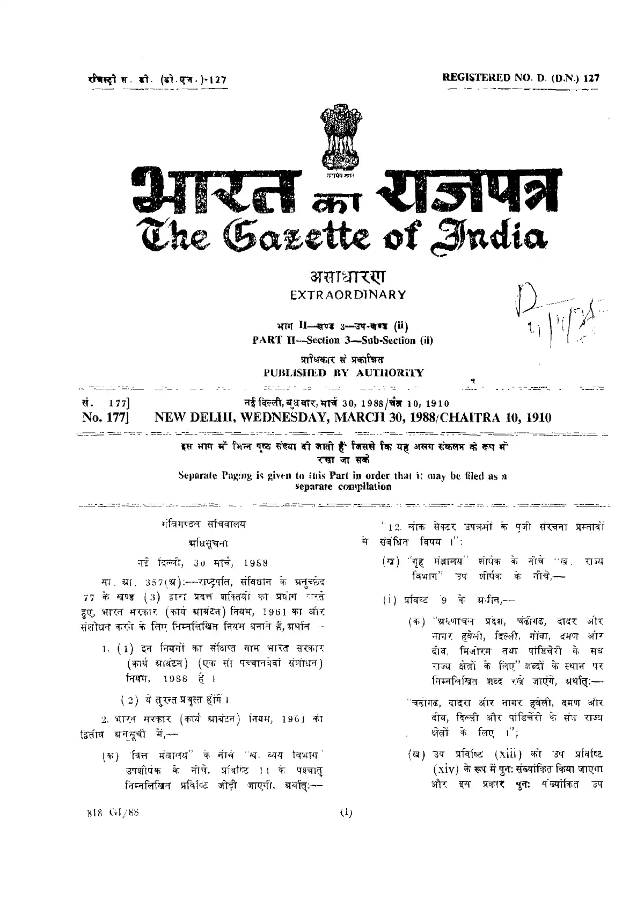
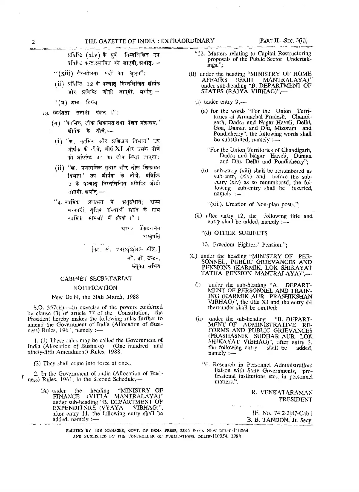

Amendment #195 (S.O. 357(E), 1988)
7 changes: 0 to the First Schedule, 7 to the Second Schedule. 3 applied4 not applied
The order, page by page
Page 1 of 2

Page 2 of 2

1234567after Schedule 2 › MINISTRY OF FINANCE › DEPARTMENT OF EXPENDITNRE › entry 11
- 12. Matters relating to Capital Restructuring proposals of the Public Sector Undertakings.
applied at schedule 2 › ministry MINISTRY OF FINANCE › department B › entry 12 in the Rules after #195
states inferred loose
Schedule 2 › MINISTRY OF HOME AFFAIRS › DEPARTMENT OF STATES › entry 9
for “For the Union Terri- tories of Arunachal Pradesh, Chandi - garh, Dadra and Nagar Haveli, Delhi, Goa, Daman and Diu, Mizoram and Pondicherry” read “For the Union Territories of Chandigarh, Dadra and Nagar Haveli, Daman and Diu, Delhi and Pondicherry”
applied at schedule 2 › ministry MINISTRY OF HOME AFFAIRS › department B › group_heading III › entry 9 in the Rules after #195
Schedule 2 › MINISTRY OF HOME AFFAIRS › DEPARTMENT OF STATES › entry 9 › item xiii
renumbered as xiv
not applied (the change could not be placed in the Rules as read; see How this document was read)
before Schedule 2 › MINISTRY OF HOME AFFAIRS › DEPARTMENT OF STATES › entry 9 › item xiv
- (xiii). Creation of Non-plan posts.
not applied (the change could not be placed in the Rules as read; see How this document was read)
after Schedule 2 › MINISTRY OF HOME AFFAIRS › DEPARTMENT OF STATES › entry 12
- d. OTHER SUBJECTS
- 13. Freedom Fighters' Pension.
not applied (the change could not be placed in the Rules as read; see How this document was read)
Schedule 2 › MINISTRY OF PER- SONNEL, PUBLIC GRIEVANCES AND PENSIONS › DEPART- MENT OF PERSONNEL AND TRAIN - ING › XI; Schedule 2 › MINISTRY OF PER- SONNEL, PUBLIC GRIEVANCES AND PENSIONS › DEPART- MENT OF PERSONNEL AND TRAIN - ING › XI › entry 44
not applied (the change could not be placed in the Rules as read; see How this document was read)
after Schedule 2 › MINISTRY OF PER- SONNEL, PUBLIC GRIEVANCES AND PENSIONS › DEPART- MENT OF ADMINISTRATIVE RE- FORMS AND PUBLIC GRIEVANCES › entry 3
- 4. Research in Personnel Administration liaison with State Governments, professional institutions etc., in personnel matters.
applied at schedule 2 › ministry Ministry of Personnel Public Grievances and Pen sions (Karmik, lok Shikayat tatha Pension… in the Rules after #195
How this document was read
Changes placed by an inference rule
| Change | Rule | Status | What |
|---|---|---|---|
| 1 | loose | accepted | change 1: department DEPARTMENT OF EXPENDITNRE taken for department DEPARTMENT OF EXPENDITURE, named loosely |
Known issues
| Change | Issue | Known as |
|---|---|---|
| 3 | change 3: no item xiii under schedule 2 › ministry MINISTRY OF HOME AFFAIRS › department B › group_heading III › entry 9 | Items |
| 4 | change 4: no item xiv under schedule 2 › ministry MINISTRY OF HOME AFFAIRS › department B › group_heading III › entry 9 | Items |
| 5 | change 5: no entry 12 under schedule 2 › ministry MINISTRY OF HOME AFFAIRS › department B | Entries not in the state |
| 6 | change 6: no group_heading XI under schedule 2 › ministry Ministry of Personnel Public Grievances and Pen sions (Karmik, lok Shikayat tatha Pension Mantralaya) › department A | Group headings |
From the Government of India (Allocation of Business) Rules, 1961 and their amendments, as published by the Cabinet Secretariat (cabsec.gov.in), read by orgpedia. The readings of the older scanned gazettes have known gaps.